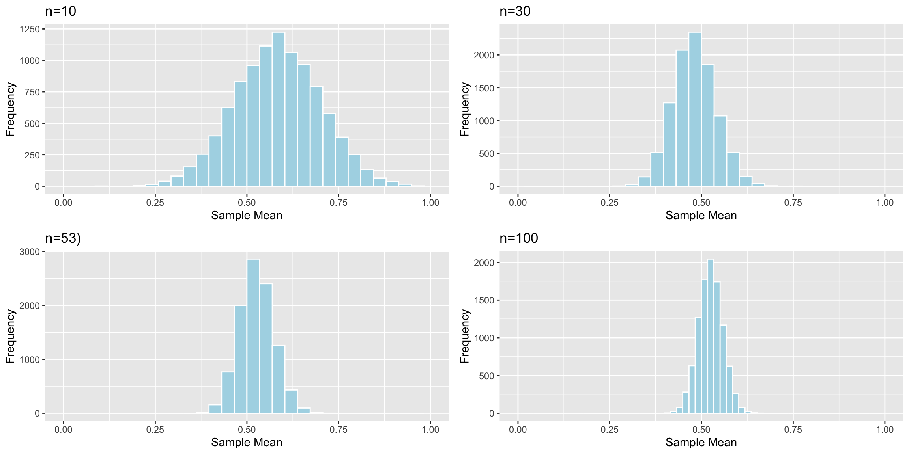
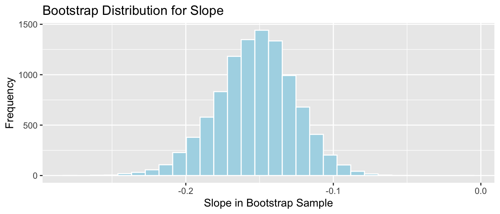
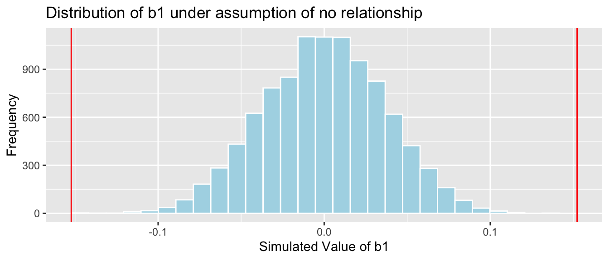

Chapter 5 Normal Error Regression Model
Learning Outcomes:
Explain when it is appropriate to use “theory-based” standard error formulas.
Interpret estimates, standard errors, test statistics, and p-values resulting from linear model output in R.
List the assumptions made in the normal error regression model.
Calculate p-values corresponding to t-statistics and F-statistics in R.
Interpret confidence intervals for an expected response, and prediction intervals, and distinguish between these two types of intervals.
Assess the whether linear model assumptions are reasonably satisfied, using residual plots, histograms, and normal QQ plots.
Explain when we should or should not expect p-values and confidence intervals obtained via “theory-based” approaches to agree with those obtained via simulation.
Identify situations where a log transformation of the response variable is appropriate.
Calculate predicted values for models involving a log transformation of the response variable.
Interpret regression coefficients in models involving a log transformation of the response variable.
Explain the regression effect.
5.1 Estimating Standard Error
5.1.1 Standard Error vs Standard Deviation
Recall that standard error is the standard deviation of the distribution of a statistic (sample mean, proportion, regression coefficient, etc.). It describes the amount of variability in this statistic between samples of a given size.
This is different than the sample standard deviation, which pertains to the amount of variability between individuals in the sample.
For example, the histogram displays the distribution of mercury levels in our sample of 53 lakes in Florida.

Standard Deviation of Mercury Levels Between Lakes:
## [1] 0.3410356The standard deviation in mercury levels between individual lakes is 0.341 ppm. This describes the amount of variability in mercury levels between individual lakes.
Bootstrap Distribution for Mean Mercury Level (\(n=53\))

Standard Error for Mean:
## [1] 0.04655744The standard deviation in the distribution for mean mercury levels between different samples of 53 lakes is approximately 0.0465574 ppm. This describes the amount of variability in mean mercury levels between different samples of 53 lakes.
There is less variability in average among samples of size 53, than there is between mercury levels of individual lakes. Although mercury levels might vary quite a bit between individual lakes, in a sample of size 53, the higher and lower levels tend to average out to something in the middle, resulting in less variability associated with the average than with individual lakes.
5.1.2 Sample Size and Standard Error
Question:
Suppose the sample consisted of 10 lakes, or 30 lakes, or 100 lakes, instead of 53, and that the distribution of the lakes in the sample was otherwise similar to that of the original 53. Would you expect the mercury level of individual lakes to increase, decrease, or stay about the same? What about the standard error of the mean mercury level?

The table shows the standard deviation in each of the samples.
| Sample_Size | SD |
|---|---|
| 10 | 0.3831797 |
| 30 | 0.3198103 |
| 53 | 0.3410356 |
| 100 | 0.3352758 |
Sample size does not impact the amount of variability between individual lakes. Standard deviation in mercury levels between individual lakes does not systematically increase or decrease based on sample size (of course it varies a little based on the lakes randomly chosen in the sample).
Now, we’ll examine what happens to the standard error of the mean as the sample size changes.
Distributions of Mean Between Different Samples

The table shows the standard error of the mean for samples of different size:
| Sample_Size | SE |
|---|---|
| 10 | 0.1166601 |
| 30 | 0.0579587 |
| 53 | 0.0465574 |
| 100 | 0.0331806 |
As sample size increases, variability between means of different samples decreases. Standard error of the mean decreases. This is also true of standard errors for other statistics (i.e. difference in means, regression slopes, etc.)
5.1.3 Standard Error Formulas
So far, we’ve used simulation (permutation tests and bootstrap intervals) to determine the amount of variability associated with a test statistic or estimate, in order to perform hypotheses tests and create confidence intervals. In special situations, there are mathematical formulas, based on probability theory, that can be used to approximate the amount of variability without having to perform the simulations.
These approximations only exist for certain kinds of statistics, and they are only valid when the sampling distribution for the statistic is symmetric and bell-shaped. Thus, they cannot be used in all situations, and we should be careful to check whether they are appropriate before applying them. Nevertheless, when appropriate, they can allow us to bypass the computation required in a simulation.
Theory-Based Standard Error Formulas
| Scenario | Standard Error |
|---|---|
| Single Mean | \(SE(b_0)=\frac{s}{\sqrt{n}}\) |
| Difference in Means | \(SE(b_j)=s\sqrt{\frac{1}{n_1}+\frac{1}{n_2}}\) |
| Single Proportion | \(SE(\hat{p}) = \sqrt{\frac{\hat{p}(1-\hat{p})}{n}}\) |
| Difference in Proportions | \(SE(\hat{p}) = \sqrt{\left(\frac{\hat{p_1}(1-\hat{p}_1)}{n_1}+\frac{\hat{p_2}(1-\hat{p_2})}{n_2}\right)}\) |
| Intercept in Simple Linear Regression | \(SE(b_0)=s\sqrt{\frac{1}{n}+\frac{\bar{x}^2}{\sum(x_i-\bar{x})^2}}\) |
| Slope in Simple Linear Regression | \(SE(b_1)=\sqrt{\frac{s^2}{\sum(x_i-\bar{x})^2}}=\sqrt{\frac{1}{n-2}\frac{{\sum(\hat{y}_i-y_i)^2}}{\sum(x_i-\bar{x})^2}}\) |
\(s=\sqrt{\frac{\displaystyle\sum_{i=1}^n(y_i-\hat{y}_i)^2}{(n-(p+1))}}\), (p is number of regression coefficients not including \(b_0\)) is sample standard deviation. Note that in the one-sample case, this simplifies to the standard deviation formula we’ve seen previously.
In the 2nd formula, the standard error estimate \(s\sqrt{\frac{1}{n_1+n_2}}\) is called a “pooled” estimate since it combines information from all groups. When there is reason to believe standard deviation differs between groups, we often use an “unpooled” standard error estimate of \(\sqrt{\frac{s_1^2}{n_1}+\frac{s_2^2}{n_2}}\), where \(s_1, s_2\) represent the standard deviation for groups 1 and 2.
There is no theory-based formula for standard error associated with the median or standard deviation. For these, and many other statistics, we rely on simulation to estimate variability between samples.
There are formulas for standard errors associated with coefficients in multiple regression, but these require mathematics beyond what is assumed in this class. They involve linear algebra and matrix inversion, which you can read about here if you are interested.
5.1.4 One-Sample Mean Example
We use the first formula to calculate the standard error of the mean mercury concentration associated with samples of 53 lakes.
\(SE(\bar{x})=\frac{s}{\sqrt{n}} = \frac{0.341}{\sqrt{53}}=0.04684\)
The calculation in R is shown below.
## [1] 0.04684485The standard error column in the R summary output is calculated using the theory-based formulas.
##
## Call:
## lm(formula = Mercury ~ 1, data = FloridaLakes)
##
## Residuals:
## Min 1Q Median 3Q Max
## -0.48717 -0.25717 -0.04717 0.24283 0.80283
##
## Coefficients:
## Estimate Std. Error t value Pr(>|t|)
## (Intercept) 0.52717 0.04684 11.25 0.00000000000000151 ***
## ---
## Signif. codes: 0 '***' 0.001 '**' 0.01 '*' 0.05 '.' 0.1 ' ' 1
##
## Residual standard error: 0.341 on 52 degrees of freedomLet’s compare this to the standard error we obtained using 10,000 bootstrap simulations.

Bootstrap standard error:
## [1] 0.04655744The theory-based formula gives a standard error estimate very close to the one we obtained via bootstrap simulation.
5.1.5 Difference in Means Example
We use the probability-based formula to calculate the standard error for difference in means between 33 lakes in North Florida, and 20 lakes in South Florida
\[ SE(\bar{x}_1-\bar{x}_2)=s\sqrt{\frac{1}{n_1}+\frac{1}{n_2}}, \]
## [1] 0.08984774R model summary output:
##
## Call:
## lm(formula = Mercury ~ Location, data = FloridaLakes)
##
## Residuals:
## Min 1Q Median 3Q Max
## -0.65650 -0.23455 -0.08455 0.24350 0.67545
##
## Coefficients:
## Estimate Std. Error t value Pr(>|t|)
## (Intercept) 0.42455 0.05519 7.692 0.000000000441 ***
## LocationS 0.27195 0.08985 3.027 0.00387 **
## ---
## Signif. codes: 0 '***' 0.001 '**' 0.01 '*' 0.05 '.' 0.1 ' ' 1
##
## Residual standard error: 0.3171 on 51 degrees of freedom
## Multiple R-squared: 0.1523, Adjusted R-squared: 0.1357
## F-statistic: 9.162 on 1 and 51 DF, p-value: 0.003868Comparison to Bootstrap standard error:
NS_Lakes_Bootstrap_Plot_b1 <- ggplot(data=NS_Lakes_Bootstrap_Results, aes(x=Bootstrap_b1)) +
geom_histogram(color="white", fill="lightblue") +
xlab("b1 in Bootstrap Sample") + ylab("Frequency") +
ggtitle("Northern vs Southern Lakes: Bootstrap Distribution for b1")
NS_Lakes_Bootstrap_Plot_b1 
## [1] 0.09620419The mathematical standard error approximation is close to the one observed in our simulation, though not exact.
5.1.6 Regression Example
We use the theory-based approach to calculate standard error associated with the slope of the regression line relating mercury level and pH in Florida lakes.
\(SE(b_1)=\sqrt{\frac{s^2}{\sum(x_i-\bar{x})^2}}=\sqrt{\frac{1}{n-2}\frac{{\sum(\hat{y}_i-y_i)^2}}{\sum(x_i-\bar{x})^2}}\)
M <- lm(data=FloridaLakes, Mercury~pH) # fit model
s2 <- sum(M$residuals^2)/(53-2) #calculate s^2
x <- FloridaLakes$pH
SSx <- sum((x-mean(x))^2) #calculate denominator
SE <- sqrt(s2/SSx) # calculate SE
SE## [1] 0.03031326R model summary output:
##
## Call:
## lm(formula = Mercury ~ pH, data = FloridaLakes)
##
## Residuals:
## Min 1Q Median 3Q Max
## -0.48895 -0.19188 -0.05774 0.09456 0.71134
##
## Coefficients:
## Estimate Std. Error t value Pr(>|t|)
## (Intercept) 1.53092 0.20349 7.523 0.000000000814 ***
## pH -0.15230 0.03031 -5.024 0.000006572811 ***
## ---
## Signif. codes: 0 '***' 0.001 '**' 0.01 '*' 0.05 '.' 0.1 ' ' 1
##
## Residual standard error: 0.2816 on 51 degrees of freedom
## Multiple R-squared: 0.3311, Adjusted R-squared: 0.318
## F-statistic: 25.24 on 1 and 51 DF, p-value: 0.000006573Comparison to bootstrap standard error:

## [1] 0.02676588The mathematical standard error approximation is again close to the one observed in our simulation.
5.1.7 Theory-Based Confidence Intervals
If the sampling distribution for a statistic is symmetric and bell-shaped, we can obtain an approximate 95% confidence interval using the formula:
\[ \text{Statistic} \pm 2\times{\text{Standard Error}}, \]
where the standard error is calculated by formula, rather than via bootstrap simulations.
The confint command in R provides confidence intervals associate with each of the model parameters, which are calculated using the theory-based standard errors
Confidence Intervals for N vs S Florida Lakes
## 2.5 % 97.5 %
## (Intercept) 0.31374083 0.5353501
## LocationS 0.09157768 0.4523314Intercept Interval:
\(\approx 0.42455 \pm 2\times0.05519\)
We are 95% confident that the average mercury level among all lakes in North Florida is between 0.313 and 0.535 ppm.
LocationS Interpretation
\(\approx -0.15230 \pm 0.03031\)
We are 95% confident that the average mercury level among all lakes in South Florida is between 0.09 and 0.45 ppm higher than the average mercury concentration among all lakes in North Florida.
Note that the use of 2 in the confidence interval formula is an approximation, though one that is reasonable and widely used. Rather than using 2, R uses a value very close to 2, which varies depending on the sample size. Thus R’s calculations will not exactly match the formulas shown, but are similar enough for practical purposes. Remember that in statistics, everything is an approximation.
Confidence Intervals for pH and Mercury in Florida Lakes
## 2.5 % 97.5 %
## (Intercept) 1.1223897 1.93944769
## pH -0.2131573 -0.09144445Intercept Interval:
\(\approx 1.53092 \pm 2\times 0.20349\)
We are 95% confident that the average mercury concentration among all lakes with pH level 0 is between 1.12 and 1.94 ppm. This is not a meaningful interpretation, since none of the lakes in our sample have a pH level anywhere close to 0.
pH Interval
\(\approx -0.15230 \pm 2\times 0.03031\)
We are 95% confident that for each one-unit increase in pH, mercury level is expected to decrease between 0.09 and 0.21 ppm, on average.
5.1.8 CI Method Comparison
We’ve now seen 3 different ways to obtain confidence intervals based on statistics calculated from data.
The table below tells us what must be true of the sampling distribution for a statistic in order to use each technique.
| Technique | No Gaps | Bell-Shaped | Known Formula for SE |
|---|---|---|---|
| Bootstrap Percentile | x | ||
| Bootstrap Standard Error | x | x | |
| Theory-Based | x | x | x |
5.2 Theory-Based Hypothesis Tests
5.2.1 lm summary Output
Recall our linear model for mercury levels of lakes in Northern Florida, compared to Southern Florida.
The equation of the model is:
\[ \widehat{\text{Mercury}} = \beta_0+\beta_1\times\text{South} \]
We fit the model in R and display its summary output below.
##
## Call:
## lm(formula = Mercury ~ Location, data = FloridaLakes)
##
## Residuals:
## Min 1Q Median 3Q Max
## -0.65650 -0.23455 -0.08455 0.24350 0.67545
##
## Coefficients:
## Estimate Std. Error t value Pr(>|t|)
## (Intercept) 0.42455 0.05519 7.692 0.000000000441 ***
## LocationS 0.27195 0.08985 3.027 0.00387 **
## ---
## Signif. codes: 0 '***' 0.001 '**' 0.01 '*' 0.05 '.' 0.1 ' ' 1
##
## Residual standard error: 0.3171 on 51 degrees of freedom
## Multiple R-squared: 0.1523, Adjusted R-squared: 0.1357
## F-statistic: 9.162 on 1 and 51 DF, p-value: 0.003868The estimated regression equation is
\[ \widehat{\text{Mercury}} = 0.42455+0.27195\times\text{South} \]
We’ve seen how to obtain the first two columns of the summary table, labeled “Estimate” and “Std. Error”.
The last column, labeled “Pr(>|t|)” is, in fact a p-value associated with associated with the null hypothesis that the regression parameter on that line is zero. (i.e. \(\beta_j=0\)).
Columns in Linear Model summary() Output
Estimate gives the least-squares estimates \(b_0, b_1, \ldots, b_p\)
Standard Error gives estimates of the standard deviation in the sampling distribution for estimate. (i.e. how much uncertainty is there about the estimate?) These are computed using the formulas in Section 4.7.
t value is the estimate divided by its standard error.
Pr(>|t|) is a p-value for the hypothesis test of \(\beta_j=0\), where \(\beta_j\) is the relevant population parameter represented. (i.e. mean, difference in means, slope, etc.)
R does not perform its hypothesis test using permutation. Instead, it relies on a mathematical approximation based on probability theory.
5.2.2 N vs S Florida Lakes
Hypothesis Test for line (intercept)
Null Hypothesis: The average mercury level among all lakes in North Florida is 0 (\(\beta_0=0\)).
Alternative Hypothesis: The average mercury level among all lakes in Northern Florida is not 0 (\(\beta_0\neq 0\)).
We already know the average mercury level among all lakes in North Florida is not 0, so this is a silly test.
Hypothesis Test for line LocationS
Null Hypothesis: There is no difference in average mercury levels between Northern and Southern Florida (\(\beta_1=0\)).
Alternative Hypothesis: There is a difference in average mercury levels in Northern and Southern Florida (\(\beta_1\neq 0\)).
This test is relevant to us.
5.2.3 Recall Permuation Test
Recall our results when we performed this hypothesis test using permutation.
Permutation Test

p-value:
b1 <- Lakes_M$coef[2] ## record value of b1 from actual data
mean(abs(NSLakes_SimulationResults$b1Sim) > abs(b1))## [1] 0.0039Notice that the sampling distribution of our permutation test statistics, simulated under the assumption that the null hypothesis is true, was symmetric and bell-shaped.
5.2.4 t-distribution
When the sampling distribution of a test statistic is symmetric and bell-shaped, it can be approximated by a symmetric, bell-shaped curve, called a t-distribution.
The t-distribution is actually a family of symmetric and bell-shaped curves, each indexed by a parameter called it degrees of freedom. As the number of degrees of freedom increase, the t-distribution converges to a symmetric, bell-shaped curve called a normal distribution.
Degrees of freedom are a highly theoretical mathematical concept, which we won’t pay much attention to in this class. The idea is that we are using a symmetric, bell-shaped curve to approximate the behavior of the test statistic, seen in the permutation test.

To perform a t-test, we divide the relevant estimate \(b_j\) by its standard error. The standard error is calculated using the theory-based formulas in the previous section.
\[ t= \frac{{b_j}}{\text{SE}(b_j)} \]
follows a t-distribution.
The \(t=\frac{{b_j}}{\text{SE}(b_j)}\) is called a t-statistic.
We’ll use this t-statistic as the test statistic in our hypothesis test.
5.2.5 t-test for N vs S Lakes
Test Statistic for Northern vs Southern Lakes
\(t=\frac{{b_j}}{\text{SE}(b_j)} = \frac{0.27195}{0.08985} = 3.027\)
Key Question: What is the probability of getting a t-statistic as extreme as 3.027 if \(\beta_1=0\) (i.e. there is no difference in mercury levels between northern and southern lakes).
We plot the t-statistic of 3.027 that we observed in our data and observe where it lies on a t-distribution.
ts=3.027
gf_dist("t", df=51, geom = "area", fill = ~ (abs(x)< abs(ts)), show.legend=FALSE) + geom_vline(xintercept=c(ts, -ts), color="red") + xlab("t")
The following command calculates the area under the t-curve that is more extreme than our observed t-statistic of \(\pm 3.027\).
The df value can be found in the “Residual Standard Error” line of the model summary output.
Note: I will not actually ask you to calculate p-values this way, as we can get them directly from the R-output. This illustration is intended to show you what R is doing behind the scenes to obtain this value.
## [1] 0.003866374The low p-value gives us strong evidence of a difference in average mercury levels between lakes in Northern and Southern Florida.
Notice that the t-statistic and p-value we calculated match the values seen on the LocationS line of the R summary output.
The p-value provided by the t-test is also very similar to the one we obtained previously in the permutation test. This will generally be true, as long as the sampling distribution for our test statistic is symmetric and bell-shaped.
5.2.6 t-test for pH vs Mercury
Recall our test for evidence of a relationship between pH and mercury level in Florida lakes.
ggplot(data=FloridaLakes, aes(y=Mercury, x=pH)) +
geom_point() + stat_smooth(method="lm", se=FALSE) +
xlim(c(3, 10)) + ylim(c(0,1.5))
Null Hypothesis: Among all Florida lakes, there is no relationship between mercury level and pH. (i.e. \(\beta_1=0\))
Alternative Hypothesis: Among all Florida lakes, there is a relationship between mercury level and pH. (i.e. \(\beta_1\neq 0\))
The permutation distribution and p-value we obtained are shown below.
b1 <- Lakes_M_pH$coef[2] ## record value of b1 from actual data
Lakes_pHSimulationResultsPlot <- ggplot(data=Lakes_pHSimulationResults, aes(x=b1Sim)) +
geom_histogram(fill="lightblue", color="white") +
geom_vline(xintercept=c(b1, -1*b1), color="red") +
xlab("Simulated Value of b1") + ylab("Frequency") +
ggtitle("Distribution of b1 under assumption of no relationship")
Lakes_pHSimulationResultsPlot
p-value: Proportion of simulations resulting in value of \(b_1\) more extreme than -0.15
## [1] 0The R output for the model summary is shown below.
##
## Call:
## lm(formula = Mercury ~ pH, data = FloridaLakes)
##
## Residuals:
## Min 1Q Median 3Q Max
## -0.48895 -0.19188 -0.05774 0.09456 0.71134
##
## Coefficients:
## Estimate Std. Error t value Pr(>|t|)
## (Intercept) 1.53092 0.20349 7.523 0.000000000814 ***
## pH -0.15230 0.03031 -5.024 0.000006572811 ***
## ---
## Signif. codes: 0 '***' 0.001 '**' 0.01 '*' 0.05 '.' 0.1 ' ' 1
##
## Residual standard error: 0.2816 on 51 degrees of freedom
## Multiple R-squared: 0.3311, Adjusted R-squared: 0.318
## F-statistic: 25.24 on 1 and 51 DF, p-value: 0.000006573Notice that the p-value shown on the pH line, representing slope is practically 0, which is consistent with our simulation.
The t-statistic shown on the line pH line is calculated using the formula:
\(t=\frac{{b_j}}{\text{SE}(b_j)} = \frac{-0.15230}{0.03031} = -5.024\)
Key Question: What is the probability of getting a t-statistic as extreme as -5.024 if \(\beta_1=0\) (i.e. there is no relationship between mercury and pH among all Florida lakes).
We plot the t-statistic of -5.024 that we observed in our data and observe where it lies on a t-distribution.
ts=-5.024
gf_dist("t", df=51, geom = "area", fill = ~ (abs(x)< abs(ts)), show.legend=FALSE) + geom_vline(xintercept=c(ts, -ts), color="red") + xlab("t")
We calculate the area under the t-curve that is more extreme than our observed t-statistic of \(\pm 5.024\).
## [1] 0.000006578117This matches the very small p-value seen in the R output, and is consistent with our simulation.
5.2.7 t-test on Intercept Line
We’ve talked about the hypothesis test associated with the line pH, in the model summary output. This line pertains to the slope of the line of best fit.
##
## Call:
## lm(formula = Mercury ~ pH, data = FloridaLakes)
##
## Residuals:
## Min 1Q Median 3Q Max
## -0.48895 -0.19188 -0.05774 0.09456 0.71134
##
## Coefficients:
## Estimate Std. Error t value Pr(>|t|)
## (Intercept) 1.53092 0.20349 7.523 0.000000000814 ***
## pH -0.15230 0.03031 -5.024 0.000006572811 ***
## ---
## Signif. codes: 0 '***' 0.001 '**' 0.01 '*' 0.05 '.' 0.1 ' ' 1
##
## Residual standard error: 0.2816 on 51 degrees of freedom
## Multiple R-squared: 0.3311, Adjusted R-squared: 0.318
## F-statistic: 25.24 on 1 and 51 DF, p-value: 0.000006573Notice the (Intercept) shows a t-statistic of 7.523, and a very small p-value. What should we conclude from these? What hypotheses are being tested here?
Recall that the p-value always pertains to a test that the parameter associated with that line is 0 (\(\beta_j=0\)). The parameter associated with the line (Intercept) is \(\beta_0\), which represents the average mercury level among all lakes with a pH level of 0.
Thus, the hypotheses being tested here are:
Null Hypothesis: The average mercury level among all Florida lakes with pH level 0 is 0.
Alternative Hypothesis: The average mercury level among all Florida lakes with a pH level of 0 is not 0.
Of course, the lowest pH level among the lakes observed in our sample is just under 4, so it doesn’t make sense to draw conclusions about lakes with pH level 0. Thus, this test is meaningless.
Not every p-value provided by R tells us anything meaningful. Some attempt to answer questions that no one would ever want to ask!